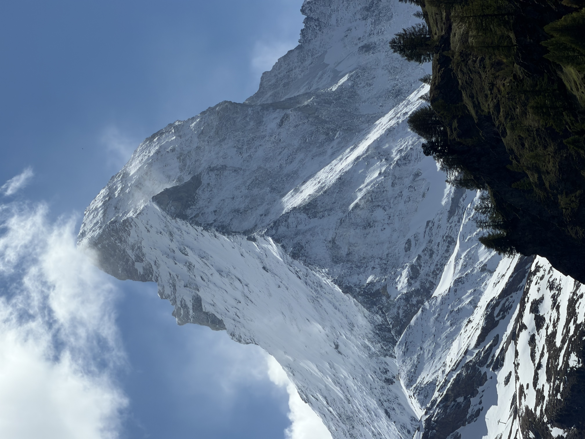

Le blog de Lucas — drone, routes secondaires et réveils trop tôt
Ici je raconte mes voyages vus d'en haut : les vols qui se passent bien, ceux qui se passent moins bien, et les palettes que je ramène de chaque paysage. Servez-vous, c'est fait pour.

On m'avait dit "tu peux attendre une semaine sans le voir". Et puis le ciel s'est lavé d'un coup : la pyramide entière, net, avec ce panache de neige que le vent arrache à la crête — on dirait que la montagne fume. Les mélèzes encore verts en bas, la neige de printemps au milieu, 4 478 mètres de caillou au-dessus. On reste bête devant, c'est tout.
il y a aussi 58 secondes de vidéo 4K de ce moment. frissons. Lire le carnet →Salut, moi c'est Lucas. Un jour j'ai fait décoller un drone au-dessus de marais salants et j'ai découvert que l'eau était vraiment rose — pas rose Instagram, rose pour de vrai. Depuis, je ne voyage plus pareil.
À chaque destination, je note tout dans un carnet : l'heure du vol, la météo, ce qui a foiré (souvent), ce qui était magique (toujours, au final). Et surtout, je pipette les couleurs exactes du paysage pour en faire une palette.
Ces palettes sont à vous. Copiez les codes, utilisez-les dans vos projets, offrez-leur une seconde vie. C'est ma façon de partager le voyage avec ceux qui restent au sol.
PS : je vole toujours dans les règles — zones autorisées, altitudes respectées. Le ciel se partage.